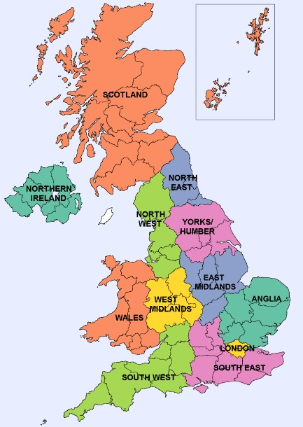
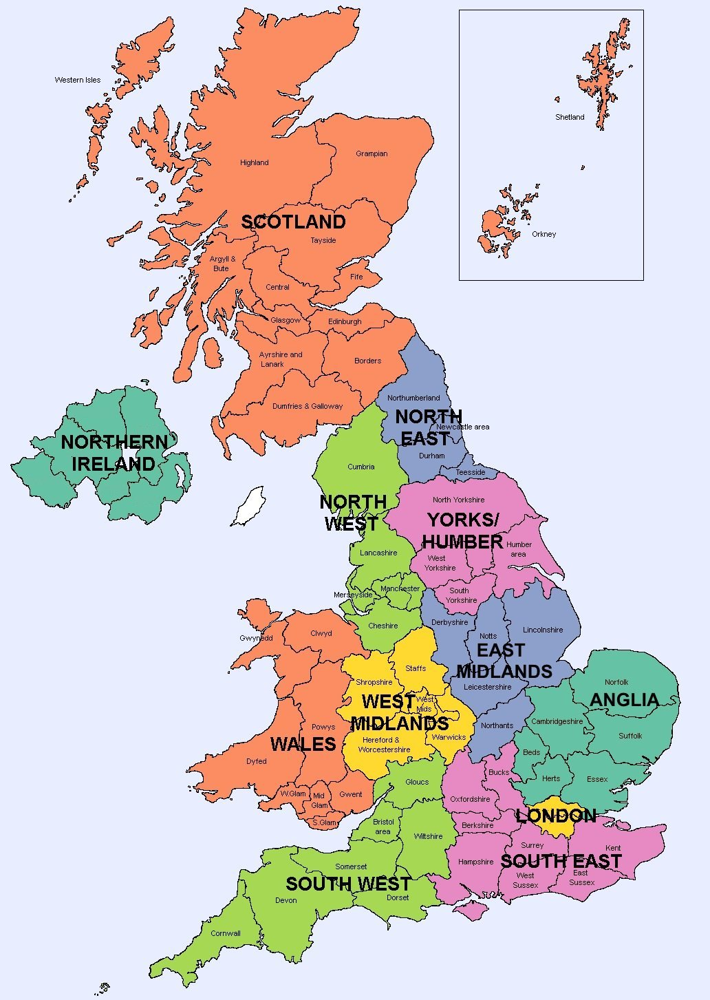

British democracy consistently evolves with the times, as is the nature of our unwritten constitution, to suit the needs and hear the voices of all the people. In the current system members of parliament are elected to a lower and upper house. The lower House of Commons is made up of 650 single-member constituencies. Whoever receives the plurality of votes in a constituency gains a seat in parliament. In an extreme example, Belfast South was won by just 24.5% of the vote in 2015 — reflecting less than a quarter of that constituency’s preference. In the upper House of Lords, all members are appointed for life - giving the public no say on the members of the upper house who scrutinise legislation. A system where large governing majorities are won by around 40% of the vote, and where one house is completely unelected, immediately seems unrepresentative.
There have been many studies into implementing a form of PR at individual elections (1998, 2015, 2019), but not how one method would have shaped the face of British politics over time. This page first examines proposals made by the Cameron-Clegg coalition, and later discussed by the Brown Commission and Labour party, to reform the House of Lords to a mostly-elected chamber. Then, we use historical General Election data to model previous elections as if they were conducted through proportional representation in multi-member geographical constituencies.
This section is adapted from a Medium article which was part of a previous incarnation of this research.
These projections are based on the plans laid out in the 'House of Lords Reform Bill 2012.' This bill was not passed through parliament, but would have gradually introduced proportionally elected members alongside appointed ones. By 2020, the upper chamber would have comprised of 240 directly elected members, 60 members appointed by an independent advisory body, and 16 Lords Spiritual (Bishops). It also closely follows the wishes of the recent 2023 Brown Commission report, endorsed by some currently in parliament, which calls for an "assembly of nations and regions" of ~200 members elected by proportional representation.
The proportionally elected seats follow on from those used in former elections to the European parliament and those used for statistical purposes currently in the UK. The UK is divided into 12 countries or regions (pictured below, image credit). Scotland, Wales and Northern Ireland constitue their own district, while England is divided into nine regions: North East, North West, Yorkshire and the Humber, West Midlands, East Midlands, Anglia/Eastern, South West, London, and South East. Seats are apportioned to each electoral district based on the size of each respective electorate - the smallest constituency is Northern Ireland with 7 seats, and South East England with 33 seats of the 240 total.

The results below project the 316-seat reformed House of Lords based on elections and polls since 2009 (the most recent EU/General elections from the introduction of the draft Reform Bill). In reality, members - and therefore the shape of the house - would not change so frequently so each result shows a snapshot of the political opinion at a given election expressed proportionally.
The intended voted system according to the Reform Bill is a "party list" system, and the Single Transferable Vote (STV) in Northern Ireland. It is therefore reasonable to state that the D'Hondt method (also known as 'party list proportional representation') is a realistic method to simulate proportional electoral results, and is therefore used here in all electoral districts. The statistics for historical general elections and constituencies was gathered from Electoral Calculus data, raw data for European Union elections, and the Electoral Calculus poll of polls for poll data. Northern Ireland is modelled with D'Hondt, as these statistics do not provide order of preference statistics.
Key to abbreviations: SNP=Scottish National Party; PC=Plaid Cymru; SDLP=Social Democratic and Labour Party; CHUK=Change UK; APNI=Alliance Party of Northern Ireland; UUP=Ulster Unionist Party; UKIP= United Kingdom Independence Party; DUP=Democratic Unionist Party; TUV=Traditional Unionist Voice; BNP=British National Party
* Sinn Féin are an abstentionist party in the UK and would not take their seats
** Change UK only contested the 2019 elections, included in 'Others' in the 2019 General Election
*** There are 60 appointed members and 12 Lords Spiritual in each parliament
^ The Brexit Party included in results from 2019 onwards, and renamed to Reform UK in 2020
+ UUP results are included with Conservatives 2009-2011 from an electoral pact
++ UKIP not included in poll results
^^ The TUV, Christian Party and the BNP are listed separately in EU elections, and in 'Others' for General Elections. They are not included in poll results.
As House of Lords reform may sometimes seem like a distant prospect, and not overwhelmingly popular with the public, what if the House of Commons was elected proportionally?
In this section, the same 12 electoral districts (made up of Scotland, Wales, Northern Ireland and the nine English Regions) are used and seats are split proportionally among them. Historical data from all UK General Elections since 1955 are used to model each election, as well as the most recent Electoral Calculus poll-of-polls. The total number of seats reflects the real size of the House of Commons for all of these elections, and ranges from 630-659 members. However, the size of each electoral district's electorate is then used to allocate seats to each district. For example, the smallest district for the 2019 General Election is Northern Ireland with 18 seats (the same as at Westminster currently), and the largest is South East England with 91 seats (currently 84 at Westminster).
(Full screen may be required to view all elections)
Key to Abbreviations: SNP=Scottish National Party, PC=Plaid Cymru, SDLP=Social Democratic and Labour Party, LD=Liberal Democrats, APNI=Alliance Party of Northern Ireland, UUP=Ulster Unionist Party, UKIP=United Kingdom Independence Party, DUP=Democratic Unionist Party
* Results for the Green Party, Alliance (NI), UKIP (2010-2017), Brexit Party (2019) are counted separately after 2010 and are included in Others&Min before this
** UUP are included with the Conservatives until 1970 and 2009-2011
*** SDLP and DUP shown from 1970 onwards. In 1970 SDLP results actually represent Republican Labour and the National Democratic Party, and the DUP results are for Protestant Unionist candidates
A common criticism of proportional system is that they do not allow local representation. This simulation, which instead takes smaller 'Counties' instead of regions allows multi-member consituencies for each provided county in the dataset which is similar to the current electoral system in Spain. The administrative divisions used are those used in the Electoral Calculus historical data of the 1955-2019 UK General Elections. These are mostly the historical counties of England, Scotland, Wales and Northern Ireland, with some slight modifications. These include separating London into all 32 boroughs, splitting both Greater Manchester and the West Midlands conurbation into three parts respectively, and splitting the former 'Strathclyde' region in two parts. A map is shown below outlining the regions, and a description can be found here.

The number of seats per multi-member constituency again vary greatly, and are calculated by the size of the electorate in each for their proportion of seats among the 630-659 in parliaments between 1955-2019. Among the 2019 seats, for example, there are two seats which have a population too small to gain any seats - Na h-Eileanan an Iar (the Western Isles) and Orkney and Shetland in Scotland. These are therefore given one seat each so they are not left unrepresented.
There are a number of other seats with one or two representatives such as Argyll and Bute (Scotland, one seat), County Fermanagh (Northern Ireland, one seat), Powys (Wales, one seat), London Borough of Kingston-upon-Thames (England, one seat). The largest seats are West Yorkshire (England, 22 seats), Hampshire (England, 20 seats), Kent and Essex (England, both 18 seats), and the Glasgow area (Scotland, 15 seats). Constituencies with one seat are by far the minority, but by default they continue to provide 'First-Past-the-Post' style representation for their communities. This may contribute to the differences we see between results in this scenario versus the twelve larger regions model.
It is immediately apparent in Northern Ireland where there is great variation between elections between Sinn Féin generally gaining a large majority of seats in recent elections whereas before 2000 it is more balanced between community. This could be due to four of the six counties often only having two or fewer representatives.
(Full screen may be required to view all elections)
Key to Abbreviations: SNP=Scottish National Party, PC=Plaid Cymru, SDLP=Social Democratic and Labour Party, LD=Liberal Democrats, APNI=Alliance Party of Northern Ireland, UUP=Ulster Unionist Party, UKIP=United Kingdom Independence Party, DUP=Democratic Unionist Party
* Results for the Green Party, Alliance (NI), UKIP (2010-2017), Brexit Party (2019) are counted separately after 2010 and are included in Others&Min before this
** UUP are included with the Conservatives until 1970 and 2009-2011
*** SDLP and DUP shown from 1970 onwards. In 1970 SDLP results actually represent Republican Labour and the National Democratic Party, and the DUP results are for Protestant Unionist candidates
The SNP and Plaid Cymru are counted together in these results
Finally, in the series of arc diagrams showing election results between 1955-2019, are the real Westminster seat distributions based on our current First-Past-the-Post system. The data comes from the official library of parliament. Again, the most recent Electoral Calculus poll of polls is shown inside the 650 constituencies of Westminster.
So how proportional is each electoral method? One way of measuring proportionality is the Gallagher Index. A score of 0 indicates perfect proportionality (e.g. a party with 55% of the public vote obtains 55% of the seats) but there is not yet an agreed threshold on what can be judged as a proportional election. A score below five was recently suggested as a threshold by a committee on elections in Canada.
Let's see how all methods compare to one another using the Gallagher Index in the chart below. The calculations for the real Westmister elections' Gallagher Index proportionality were made my Michael Gallagher himself at Trinity College, Dublin. It is impossible to measure the House of Lords, as none of its members are elected by the public.
For every General Election since 1945 in the UK, only two in the 1950s meet this target — and the average score was 11.6. The least proportional elections were the reelection of Tony Blair in 2001 (Gallagher index = 17.76), and the reelection of Margaret Thatcher in 1983 (Gallagher index = 17.45). All of these findings show that there is clear scope for a more proportional method of electing British members of parliament.
Let's compare the makeup of parliament for the most recent 2019 General Election based on real-world FPTP, area-based, and county-based D'Hondt proportional representation: